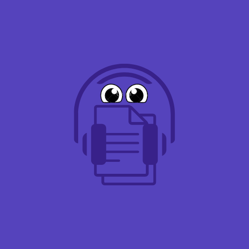

Olá, Bem Vindo
O Viva estava ansioso pela sua chegada!
O Vivamente Está Repleto de Atividades Para Propocionar a Você Ótimos Momentos.

O Vivamente Está Repleto de Atividades Para Propocionar a Você Ótimos Momentos.
| JOGOS | QUIZZES | FILMES E SÉRIES | LIVROS |
|---|---|---|---|
| The Impossible Quiz: Um jogo de perguntas e respostas com um toque de humor e perguntas inusitadas. * | O quizur é um site que contém diversos tipos de quiz, com certeza há muitas coisas nele que podem te interessar! clicando aqui você pode ir direto para o site. * | "O Fabuloso Destino de Amélie Poulain" (2001) Disponível em: Netflix, Amazon Prime Video | "A Vida Invisível de Addie LaRue" – V. E. Schwab → Romance poético sobre identidade e existência. |
| Word Search (Busca de Palavras): Jogo clássico de caça-palavras onde você deve encontrar palavras escondidas em uma grade de letras. * | O que você sabe sobre supernatural? * | "O Jardim Secreto" (1993). Disponível em: Amazon Prime Video, Google Play Filmes,YouTube. * | "Extraordinário" – R. J. Palacio → Livro emocionante sobre empatia e aceitação. |
| Little Alchemy 2: Um jogo de combinação onde você começa com elementos básicos e mistura-os para criar novos itens. É calmo e envolvente, ideal para quem gosta de lógica e criatividade. * | O que você sabe de minecraft? * | "A Vida é Bela" (1997) Disponível em: Netflix, Amazon Prime Video | "A Elegância do Ouriço" – Muriel Barbery → Reflexões sobre a beleza da vida e as pequenas alegrias. |
| Animal Crossing: Em um ambiente de ilha tropical, os jogadores podem pescar, cultivar, decorar e construir sua própria casa. * | Quiz de conhecimentos gerais. * | "Encontros e Desencontros" (2003) Disponível em: Netflix, Amazon Prime Video | "O Pequeno Príncipe" – Antoine de Saint-Exupéry → Uma história poética sobre a vida e a importância das pequenas coisas. |
| Monument Valley: Um jogo de aventura com quebra-cabeças de perspectiva e gráficos calmos, ideal para relaxamento e foco. * | Teste de personalidade. * | "Brooklyn Nine-Nine" – Comédia policial leve e divertida. Disponível em: Netflix | "A Sociedade Literária e a Torta de Casca de Batata" – Mary Ann Shaffer e Annie Barrows → Romance epistolar leve e envolvente. |
| Little Alchemy 2 também pode ser encontrado no seu navegador web. * | Quiz de Todo Mundo Odeia o Cris. * | "Anne with an E" – Drama leve e inspirador baseado no livro Anne de Green Gables. Disponível em: Netflix | "O Poder do Agora" – Eckhart Tolle → Livro sobre mindfulness e viver o presente. |
| Termo - Esse é um jogo de tentativas, onde você tenta adivinhar uma palavra e a medida que vai jogando, fica mais perto de descobrir ela. * | Perguntas e respostas sobre geografia. * | "Friends" – Clássico que traz humor e conforto. Disponível em: Netflix | "A Coragem de Ser Imperfeito" – Brené Brown → Reflexões sobre vulnerabilidade e aceitação |
| Jogos 360 - Esta é uma plataforma de jogos antigas que contém centenas de jogos divertidos e gratis para passar o tempo! * | Teste de personalidade 2. * | "Ted Lasso" – Uma série otimista e motivadora sobre futebol e empatia. Disponível em: Apple tv+ | "O Jardim Secreto" – Frances Hodgson Burnett → História clássica sobre superação e redescoberta. |
-Funcionamento: segunda a sexta-feira, das 10h às 20h; -Endereço: Av. Eng. Abdias de Carvalho, 1678, Madalena; -Os interessados em entrar na lista de espera para atendimento gratuito devem realizar a inscrição através do número (81) 98844-9538 (WhatsApp); -Valor: gratuito.
-Endereço: R. Ana Angélica, 25 - Derby, Recife; -Os interessados devem agendar a consulta através do número (81) 3412-6371; -Valor: gratuito.
-Endereço: R. do Príncipe, 526 - Boa Vista. Bloco C, 5º andar; -Telefone para agendamento (81) 2119.4115; -Funcionamento: segunda à sexta-feira, das 8h às 17h; -Valor: 1ª consulta de avaliação é grátis; as demais custam R$ 20,00; -A duração da sessão é entre 30 e 40 minutos.
-Endereço: Av. Conde da Boa Vista, 921 - Boa Vista, Recife; -Funcionamento: segunda a sexta, das 7h às 21h, e nos sábados das 7h às 12h; -Telefone para agendamento: (81) 2122-3511; -Valor: o primeiro e segundo atendimentos são gratuitos. Do terceiro em diante, o valor pode ser negociado com o terapeuta, visto que o valor base é R$20,00.